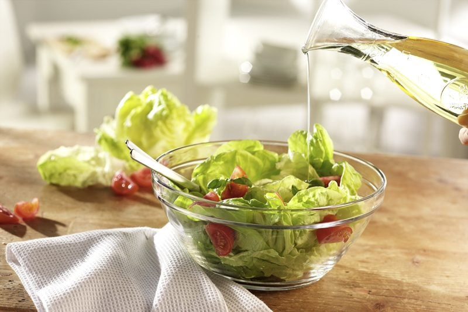
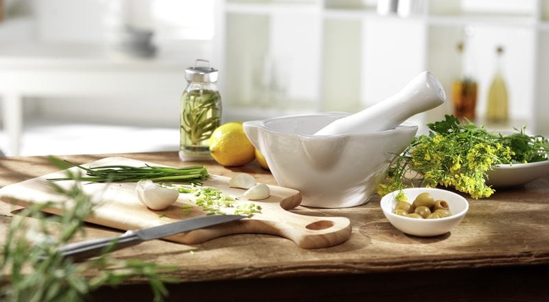

Salad Dressing Recipe Template
Five basic ingredients are needed for building a salad dressing.
Anything beyond five ingredients is entirely up to you, and your taste buds. Additional ingredients are accessories that personalize a dressing for a particular dish. It only takes a matter of minutes to make a salad dressing, and in doing so, you can control the quality of your ingredients as well as the quantity.

My goodness, when was the last time you allowed your eyes to scan over the nutritional label on a jar of manufactured dressing, as well as the ingredient list? It is common to find more than twenty different ingredients listed, half of which turn into a Hooked on Phonics game in trying to pronounce them. Then you end up standing in the middle of the aisle to Google on your smartphone as to what they are. To top it off they charge high prices for these lab-produced chemical products.
I encourage you to step out of your comfort zone and try making a few of your own. You might surprise yourself. Trust me; you are listening to a woman who didn’t dare move beyond using cinnamon, salt, and pepper. No longer do I fear spices. I look them square in the eye with confidence, experiment with them, and create dressings that make my taste buds sing.
Five Ingredients / Five Categories
Below you will find the five ingredients broken down into five categories, along with a few examples to help you get your thought process moving. Choose one from each group and then tailor it with added ingredients to create the flavor you desire.
Five Base Ingredient Categories
- Oils/Fats – Olive oil, Flax oil, Coconut oil, Nut butters, Tahini, Sesame seeds, Sunflower seeds, Pumpkin seeds, Pinenuts, Almonds, Cashews, Macadamia nuts, Avocado
- Salts – Celtic Sea salt, Crystal salts, Nama Shoyu, Miso, Sea vegetables
- Acids – Lemon, Lime, Orange, Grapefruit, Tomato, Sauerkraut, Apple Cider Vinegar
- Sweets – Dates, Figs, Dried Fruit, Honey, Orange, Berries, Papaya, Mangos
- Aromatics/Herbs and Spices – Garlic, Ginger, Onion, Chili, Peppers, Cayenne, Basil, Oregano, Thyme, Dill, Mint, Curry, Sun-Dried Tomatoes
Added Ingredients
- Chopped shallots, scallions, or sweet onion
- Minced garlic
- Grated ginger (excellent in a lime-based dressing on a simple green salad with nectarines)
- Chopped fresh herbs like chives, chervil, mint, and/or parsley (mint is especially delicious with citrus)
- A tablespoon of whole grain mustard
- A tablespoon of flaked nutritional yeast (adds a cheesy flavor)

Tips:
- Add water when possible to most dressings to allow for the use of less oil.
- Avocados are an excellent substitution for oil.
- There are fewer calories and fat grams if you are looking for a lower calorie alternative.
- If you use avocados, make sure to add them as the last ingredient.
- If you over blend them, it can affect the flavor and texture.
- Always add the acids last because that will make the dressings thicker and creamier.
- Using a blender will help you achieve a creamier dressing but if you don’t have access to one a mason jar will work. Just add your ingredients, put the lid on and shake away.
- Creamy dressings will stick to the greens in your salad better and prevent a puddle in the bottom of your dish.
- Soaking nuts that you may use in your dressings are beneficial for a couple of reasons.
- Soaking the seeds or nuts releases the enzyme inhibitors making them easier to digest.
- Soaking the seeds or nuts will help to soften them a bit for blending purposes and will help to avoid a gritty dressing.
- The addition of a little mustard helps to bind oil and vinegar together, making for a more stable emulsion.
- The ratio for a vinaigrette is typically three parts oil to one part vinegar or lemon juice, etc.
 Dressing your salads:
Dressing your salads:
- Leafy salads should always be dressed at the last possible minute.
- I can’t emphasize enough the importance of thoroughly drying all salad ingredients before dressing them. The best dressing in the world can’t save a salad if the greens haven’t been thoroughly dried. Invest in a salad spinner; it is essential kitchen equipment.
- Bold greens such as peppery arugula or bitter chicory are best paired with an equally assertive dressing; e.g., balsamic vinaigrette.
- Tender, mild lettuces — butter or Bibb lettuces or baby greens, for instance — are best treated with more delicacy. Lemon juice or a mild vinegar such as white wine, champagne or rice wine is most appropriate.
- Romaine and other crisp, mildly flavored lettuces have an affinity for creamy dressings. Similarly, stronger flavored, fleshier greens beg for a more generous hand with the dressing; greens more delicate in flavor and substance are better when lightly dressed.
- When purchasing your greens, a heavier head indicates freshness. Look for crisp leaves; there shouldn’t be any bruising or browning. Look at the base of the greens, there shouldn’t be much browning, if there is, it means that it has been sitting around after harvesting.
Side note about fats: Fruit and vegetables are good sources of vitamins, minerals, antioxidants, phytochemicals, and fiber. Many of these nutrients (e.g., beta-carotene, vitamin D, and vitamin E) are fat soluble, and their absorption is enhanced when consumed with a small number of healthy fats. Add a small amount of healthy oil (e.g., extra virgin olive oil or flaxseed oil) to the salad dressing or while cooking, or include other healthy fat sources such as avocado, coconut, nuts or seeds.
A word on reducing oils:
- Olive oil is a classic, but it might not be the flavor you’re looking to create. Avocado oil is another smooth, richly flavored option
- Walnut oil (or another nut oil) is a nicely flavored option.
- Seed oils like sunflower, flaxseed, or grapeseed oil are delicious choices.
- When reducing oils in your dressing to cut calories, add chutney or mustard. These ingredients will also add flavor and help to emulsify the other ingredients. Choose strongly flavored oils such as toasted sesame, walnut, or peppery extra virgin olive oil that, even when used sparingly, contribute a lot of flavor to dressings. Treat yourself to premium vinegar such as aged balsamic vinegar, which is concentrated and low acid. You’ll be able to get by with less, or even no, oil if the vinegar you use isn’t too puckering. Find your light dressing too tart? Add a pinch of sweetener to offset the acidity of the vinegar.
- Carotenoids, found in salad leaves, are best absorbed when eaten with a little oil. Try adding delicious oil-based dressings, or even an avocado with its healthy monounsaturated fats, to maximize their availability.
Template Examples:
Here are some examples of combinations that can be made but don’t limit yourself to them. These dressings are all made in a blender.
- Basic Tahini – Water, Tahini, Nama Shoyu, Lemon juice, and Garlic (this was served with baby spinach and onion salad)
- Spicy Thai – Olive oil, Almond butter, Nama Shoyu, Lime juice, Honey, Ginger, Garlic, and Thai pepper (this was served on cabbage, bok choy, raisins, coconut, and scallions)
- Date dressing – Water, Olive oil, Miso, Lemon juice, Dates, and Garlic (this was served on a mixture of baby greens)
- Creamy Italian – Water, Macadamia nuts, Celtic salt, Apple cider vinegar, Garlic, Basil, and Oregano
- Tropical Vinaigrette – Flax oil, Celtic salt, Apple cider vinegar, Mangos, Papaya, Mint, and Garlic
- Sun Dried Dream – Cashews, Celtic salt, Grapefruit juice, Apple cider vinegar, and Sun-dried tomatoes
- Ageless – Water, Sesame seeds, Miso, Sauerkraut, and Garlic
- Avocado Dressing – Avocado, Celtic salt, and Lemon juice
- Curry Cream – Tahini, Celtic salt, Orange juice, Ginger, and Curry
.
© AmieSue.com